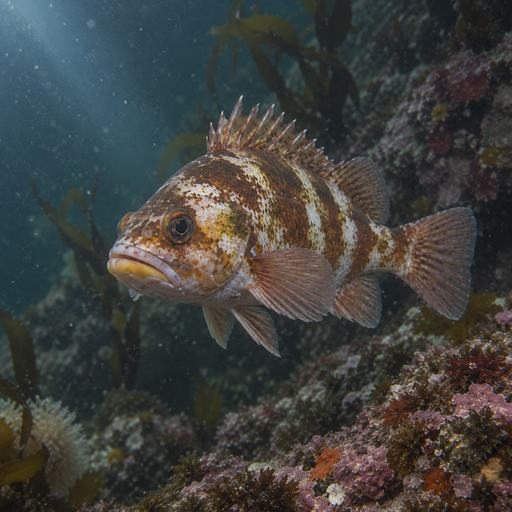
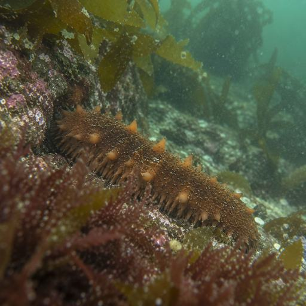
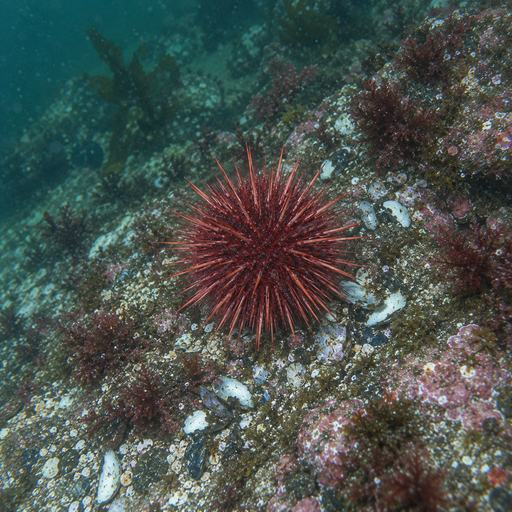
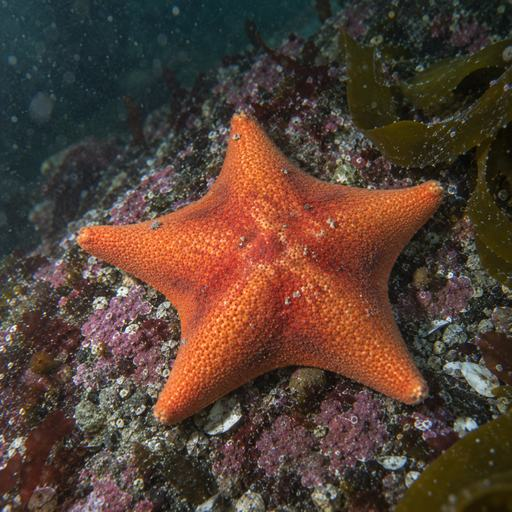
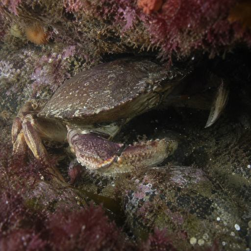
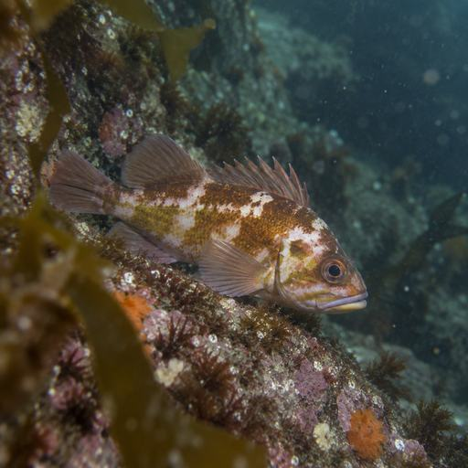

1.Query promoted observations Filters that find observations to add
Promoted observations only always
to
to
Advanced filtersnone set
2.Query results What these filters match
12,486observations
24,892frames
67videos
12species
Rockfish3,24826%Lingcod2,81423%Canary rockfish1,98616%Kelp greenling1,49212%Invertebrate1,21010%Other (7 classes)1,73614%






3.Current dataset Name, composition and what went in
- 1. CAMPA 2024 · Rockfish (high conf)Dive 0123–0140 | Confidence ≥ 0.705,842observations
- 2. Lingcod & GreenlingAll dives | 2026-06-01 – 2026-07-154,128observations
- 3. Invertebrates (MARP-Det-v3 2.0.0)All dives | Confidence ≥ 0.602,516observations
Total (deduplicated)
11,982
observations
Duplicates are ignored when adding from several queries
Rockfish5,10226%Lingcod2,46821%Canary rockfish1,84215%Kelp greenling1,33611%Invertebrate1,1249%Other (7 classes)2,11018%
4.Train / validation / test Every dataset holds all three, fixed on save
1,204 overlap groups
%
%
%
8,387 train
2,396 validation
1,199 test
Whole groups only, so the shares land near the request
Saved datasets (14)
| Name | Description | Observations | Frames | Classes | Created | Updated | Actions |
|---|---|---|---|---|---|---|---|
| CAMPA_2024_Rockfish_v3 | Rockfish training set, high confidence | 11,982 | 24,103 | 12 | 10:242026-09-10 | 10:242026-09-10 | |
| GULF_Invertebrates_v2 | Invertebrate validation set | 5,672 | 11,340 | 8 | 16:122026-09-08 | 09:412026-09-09 | |
| Baja_Seamount_Test | Model test set from the Gulf survey | 4,218 | 8,436 | 7 | 16:032026-08-25 | 11:172026-08-28 | |
| ALL_Projects_Inverts_v5 | Multi-species training dataset | 15,734 | 31,892 | 24 | 09:122026-08-20 | 14:552026-08-21 | |
| SALT_2024_Habitat_v2 | Substrate and habitat classes | 6,204 | 12,880 | 7 | 08:402026-06-28 | 15:092026-07-02 |
Saved datasets (14)
| Name | Description | Observations | Frames | Classes | Created | Updated | Actions |
|---|---|---|---|---|---|---|---|
| CAMPA_2024_Rockfish_v3 | Rockfish training set, high confidence | 11,982 | 24,103 | 12 | 10:242026-09-10 | 10:242026-09-10 | |
| GULF_Invertebrates_v2 | Invertebrate validation set | 5,672 | 11,340 | 8 | 16:122026-09-08 | 09:412026-09-09 | |
| Baja_Seamount_Test | Model test set from the Gulf survey | 4,218 | 8,436 | 7 | 16:032026-08-25 | 11:172026-08-28 | |
| ALL_Projects_Inverts_v5 | Multi-species training dataset | 15,734 | 31,892 | 24 | 09:122026-08-20 | 14:552026-08-21 | |
| SALT_2024_Habitat_v2 | Substrate and habitat classes | 6,204 | 12,880 | 7 | 08:402026-06-28 | 15:092026-07-02 |